Observability & monitoring¶
How to monitor a script that runs forever (a daemon) or on a schedule (cron), at homelab / small-startup scale — what the tools actually are, what real setups use, and a base template to start from. Grounded in real writeups (see Further reading), not vendor decks.
Alert delivery is a swappable leaf, not the hub. Every quality writeup routes alerts to a receiver you can change (ntfy, Slack, Discord, email, Gotify, Telegram, PagerDuty) behind Alertmanager / Shoutrrr / a tool's own integrations. Pick the collector and store deliberately; the channel is a one-line config. Diagrams below say "notify" — substitute whatever you like.
Acronyms & jargon (click to expand)
- IOPS — disk I/O operations per second (throughput in ops, not bytes).
- TSDB — time-series database (stores metrics over time).
- SaaS — software-as-a-service (a vendor hosts it; your data leaves the box).
- PromQL / APL — the query languages of Prometheus / Axiom.
- OpenTelemetry (OTel) / OTLP — vendor-neutral standard + wire protocol for logs, metrics and traces.
- APM — application performance monitoring (latency / error rate / throughput of your app's own code).
- ML anomaly — machine-learning detection of "this looks abnormal vs the usual pattern".
- WAL — write-ahead log (an append-only durability log; it's why Loki's alert ruler can miss evaluations).
- node_exporter / cAdvisor — the standard agents that expose a Linux host's / containers' metrics for Prometheus to scrape.
- Alertmanager — Prometheus's separate alert router (groups, silences, dedupes, routes to receivers).
- journald — systemd's built-in log store, queried with
journalctl. - Shoutrrr — a library giving one URL syntax for many notify backends (Beszel uses it).
- PocketBase / ClickHouse / SQLite — the embedded / columnar datastores these tools keep their data in; you rarely touch them directly.
Contents¶
- The reframe — three problems, not one
- What real homelab setups actually run
- The two core architectures
- The base template (tiers)
- The tools, with pictures
- What the metrics look like (CPU over time)
- Dashboards — look vs be told
- NixOS recipe
- Avoid
- TL;DR — what should I actually do?
- Further reading
The reframe — three problems, not one¶
A "monitoring" need is really three failure questions, each needing a different tool:
| Question | Detected by | Tool class |
|---|---|---|
| Did it even run / is it alive? | absence of a signal | dead-man's-switch (heartbeat) |
| Is the box healthy (CPU/RAM/IOPS)? | threshold on a level | metrics / time-series DB |
| Did it error or go quiet? | a log pattern / log silence | logs (or just journald) |
The first is the highest-value and most-skipped: a CPU graph looks identical whether your cron ran or never fired. Only a heartbeat turns "nothing happened" into an alert.
flowchart LR
classDef src fill:#85c1e9,color:#1a252f,stroke:#2471a3
classDef tool fill:#52be80,color:#145a32,stroke:#196f3d
classDef key fill:#c39bd3,color:#4a235a,stroke:#7d3c98
classDef leaf fill:#717d7e,color:#fff,stroke:#5d6d7e
JOB["your script<br/>daemon or cron"]:::src
JOB --> Q1["did it even run?<br/>is it alive?"]:::key
JOB --> Q2["CPU / RAM / IOPS<br/>healthy?"]:::tool
JOB --> Q3["errored?<br/>gone quiet?"]:::tool
Q1 --> H["dead-man's-switch<br/>detects ABSENCE"]:::key
Q2 --> M["metrics / TSDB"]:::tool
Q3 --> L["logs / journald"]:::tool
H --> N["notify<br/>(ntfy · Slack · email · …)"]:::leaf
M --> N
L --> N
N --> YOU["you"]:::leafPurple = the liveness path metrics can't see. Grey = the notify channel — swappable; same colours mean the same thing in every diagram below.
What real homelab setups actually run¶
Five real writeups (2023–2026) solving close to this problem:12345
| Writeup (date) | What it recommends |
|---|---|
| Natsuki — End-to-end homelab monitoring (2026-01) | node_exporter + cAdvisor → Prometheus → Grafana → Alertmanager → channel; + Loki/Promtail for logs |
| nxsi — Complete stack via Docker Compose (2026-02) | 9-service Prometheus + Loki + Grafana + Alertmanager; Uptime Kuma alongside; receiver left blank on purpose |
| XDA — Beszel changed how I monitor my homelab (2025-05) | Beszel hub + agents as the lightweight middle ground between Uptime Kuma and a Grafana/Prometheus build |
| BigData Republic — Effective cron job monitoring (2023-06) | logs + notifications + a heartbeat tool (Healthchecks.io / Cronitor) — the dead-man's-switch model |
| Daniel Pecos — Homelab monitoring w/ Grafana + Prometheus (2024-08) | node_exporter + cAdvisor → Prometheus → Grafana (metrics-only) |
Two patterns dominate, chosen by what you're watching: a pull-based metrics stack (Prometheus + Grafana family) for host/container resources, and a push-based heartbeat (Healthchecks-style) for "did my job run". For a cron job or long-running script, the heartbeat is the direct fit; the metrics stack is what people layer on once they have several hosts/containers. Lighter single-purpose tools — Beszel, Uptime Kuma, Netdata — show up repeatedly for people who find the full stack too heavy, often run alongside it rather than instead.
So what: Don't copy the 9-service Grafana stack for a single cron job — that's the common over-build. Start with a heartbeat; add a metrics tool when host resources become a real question; treat the alert channel as a leaf you swap freely.
The two core architectures¶
Pull-based metrics stack — the box exposes numbers, a scraper pulls them on a schedule:
flowchart LR
classDef src fill:#85c1e9,color:#1a252f,stroke:#2471a3
classDef tool fill:#52be80,color:#145a32,stroke:#196f3d
classDef leaf fill:#717d7e,color:#fff,stroke:#5d6d7e
E["exporters /metrics<br/>node_exporter · cAdvisor"]:::src -->|"scrape every 15s"| P["Prometheus<br/>TSDB + alert rules"]:::tool
P --> G["Grafana<br/>PromQL dashboards"]:::tool
P -->|"rule fires"| AM["Alertmanager<br/>route · dedupe · silence"]:::tool --> N["notify (any receiver)"]:::leafPush-based heartbeat — the job announces itself; absence is the alarm:
flowchart LR
classDef src fill:#85c1e9,color:#1a252f,stroke:#2471a3
classDef key fill:#c39bd3,color:#4a235a,stroke:#7d3c98
classDef leaf fill:#717d7e,color:#fff,stroke:#5d6d7e
J["your job<br/>curl a ping on success"]:::src -->|"heartbeat"| H["heartbeat monitor<br/>expects ping within<br/>period + grace"]:::key
H -->|"ping missing"| N["notify (any channel)"]:::leafSo what: Pull suits always-on hosts on a known network; push suits scheduled/ephemeral work — and a cron job is inherently push (it announces "I ran"), which is why a scrape-based stack structurally can't tell you it never started.
The base template (tiers)¶
Match the tier to the question you actually have. "notify" = your channel of choice.
| Tier | Know that… | Add | Pick |
|---|---|---|---|
| 0 always | it errored / daemon stuck | systemd OnFailure= + journal-grep timer + WatchdogSec= |
native, zero new services |
| 1 almost always | it ran at all / box is up | dead-man's-switch | Healthchecks.io (hosted free → self-host) or Uptime Kuma |
| 2 capacity matters | CPU/RAM/IOPS trend | metrics | Beszel → Prometheus+Grafana if outgrown |
| 3 want search/UI/multi-box | what it logged / went quiet | logs | Vector → Axiom, or self-host SigNoz/OpenObserve |
flowchart LR
classDef src fill:#85c1e9,color:#1a252f,stroke:#2471a3
classDef tool fill:#52be80,color:#145a32,stroke:#196f3d
classDef key fill:#c39bd3,color:#4a235a,stroke:#7d3c98
classDef leaf fill:#717d7e,color:#fff,stroke:#5d6d7e
subgraph BOX["your box · NixOS"]
JOB["script / daemon / cron"]:::src
T0["Tier 0 · systemd"]:::tool
AG["Tier 2 · metrics agent"]:::tool
VE["Tier 3 · log shipper"]:::tool
JOB --> T0
JOB --> AG
JOB --> VE
end
JOB -->|"heartbeat"| HC["Tier 1 · heartbeat monitor"]:::key
AG --> MB["metrics backend"]:::tool
VE --> LB["logs backend"]:::tool
T0 --> N["notify channel"]:::leaf
HC --> N
MB --> N
LB --> N
N --> YOU["you"]:::leafSo what: Ship Tier 0 + Tier 1 on every box (an afternoon); add 2 and 3 per-box only when a real question appears. systemd can't detect its own absence (it dies with the box) — that's why Tier 1 is a separate external witness.
The tools, with pictures¶
What each option actually is, how its data flows, and what its UI looks like. Screenshots are from each project's own site/docs (see Further reading for sources).
Uptime Kuma — liveness + status pages (self-host)¶
Define monitors (HTTP/TCP/ping/DNS, or a push type for cron jobs); Kuma probes on a schedule or receives heartbeats, stores results in SQLite, shows a live dashboard + public status page, and fires 90+ notification integrations on state change.
flowchart LR
classDef src fill:#85c1e9,color:#1a252f,stroke:#2471a3
classDef tool fill:#52be80,color:#145a32,stroke:#196f3d
classDef leaf fill:#717d7e,color:#fff,stroke:#5d6d7e
M["monitors you define<br/>HTTP · TCP · ping · push"]:::src --> K["Uptime Kuma<br/>probe / receive → SQLite"]:::tool
K --> D["dashboard + status page"]:::tool
K -->|"state change"| N["notify (90+ integrations)"]:::leaf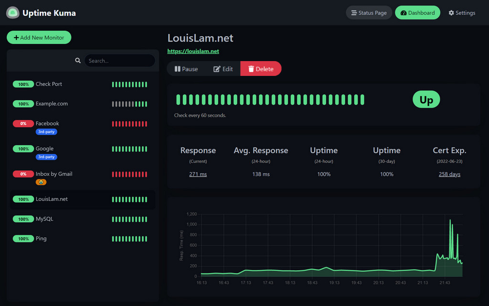
Dashboard: each monitor's uptime and response time at a glance.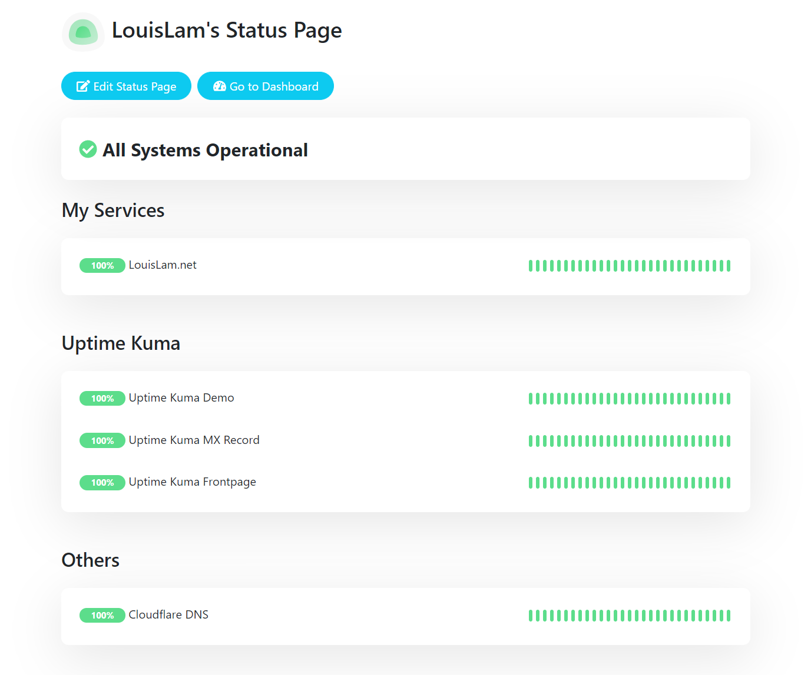
A published status page — services and their up/down state.Healthchecks.io — the cron dead-man's-switch (self-host or free SaaS)¶
Purpose-built heartbeat monitor: each check has a ping URL; your job curls it on success. If a ping doesn't arrive within period + grace, the check goes down and notifies. This is the one tool that catches "the cron never ran".
flowchart LR
classDef src fill:#85c1e9,color:#1a252f,stroke:#2471a3
classDef key fill:#c39bd3,color:#4a235a,stroke:#7d3c98
classDef leaf fill:#717d7e,color:#fff,stroke:#5d6d7e
J["cron / job<br/>... && curl hc-ping.com/<uuid>"]:::src -->|"heartbeat"| H["Healthchecks<br/>period + grace tracker"]:::key
H --> D["checks dashboard + event log"]:::key
H -->|"ping missing"| N["notify (any channel)"]:::leaf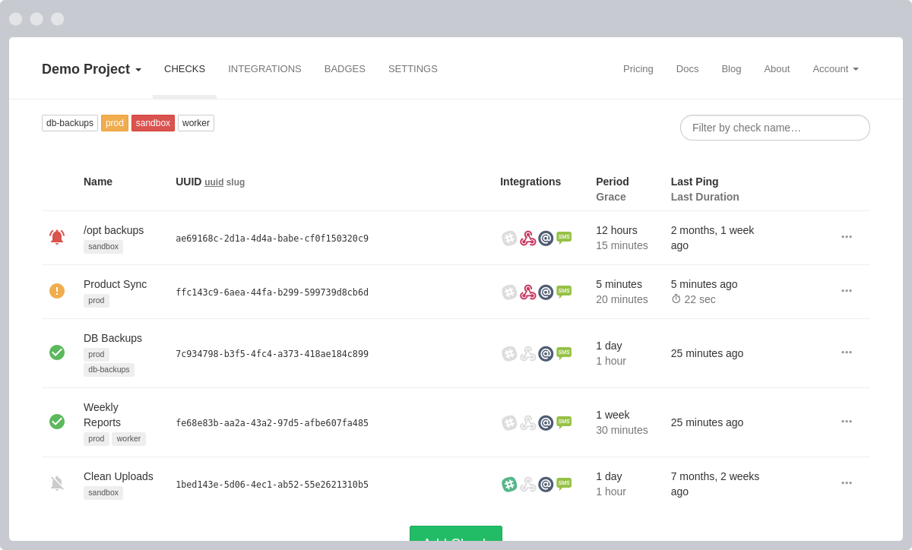
The checks list — each background job's status, period and last ping.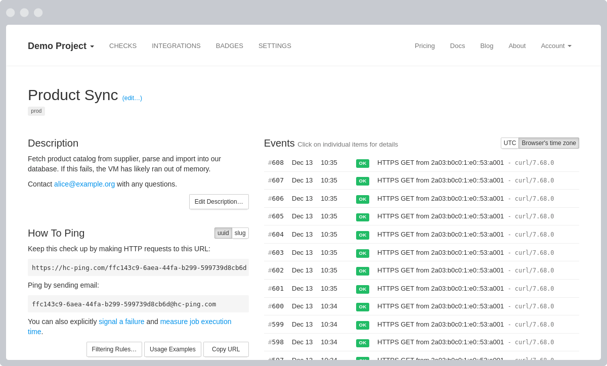
A single check's detail + live event log.Beszel — lightweight metrics (self-host)¶
The "new lightweight" pick: a ~10 MB agent per host reads CPU/mem/disk-I/O/net/containers and reports to a small hub (PocketBase + SQLite) that draws the dashboard and evaluates threshold alerts (CPU/mem/disk/temp/status). The middle ground between Uptime Kuma and a Grafana/Prometheus build.
flowchart LR
classDef src fill:#85c1e9,color:#1a252f,stroke:#2471a3
classDef tool fill:#52be80,color:#145a32,stroke:#196f3d
classDef leaf fill:#717d7e,color:#fff,stroke:#5d6d7e
A["agent per host (~10 MB)<br/>cpu·mem·disk·net·containers"]:::src --> HUB["Beszel hub<br/>PocketBase + SQLite"]:::tool
HUB --> D["dashboard + per-system pages"]:::tool
HUB -->|"threshold"| N["notify (Shoutrrr:<br/>email · Telegram · webhook · …)"]:::leaf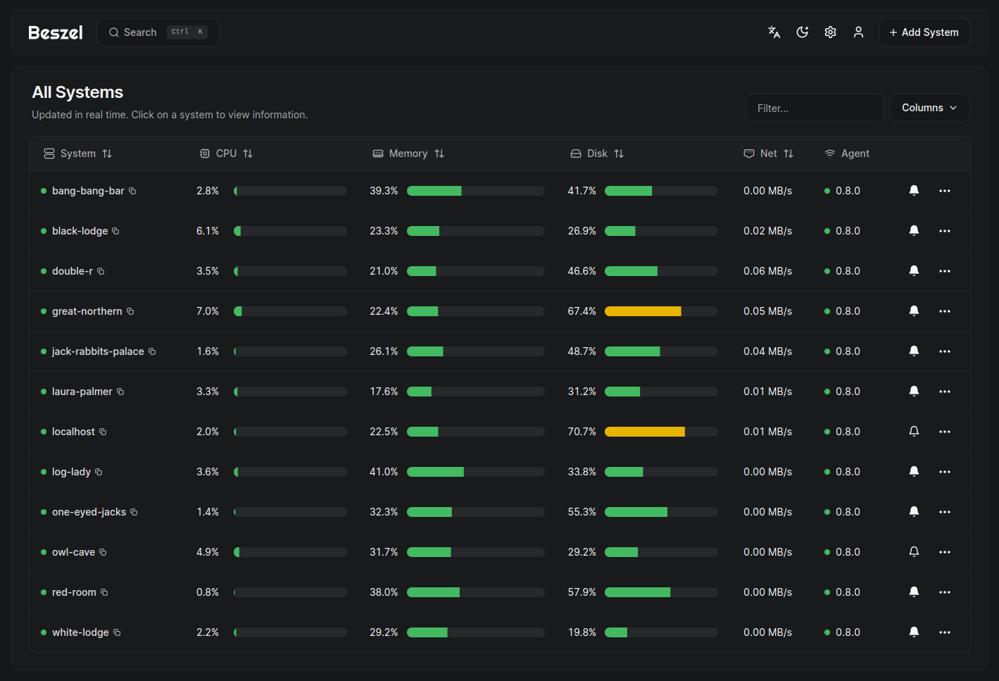
Multi-system overview.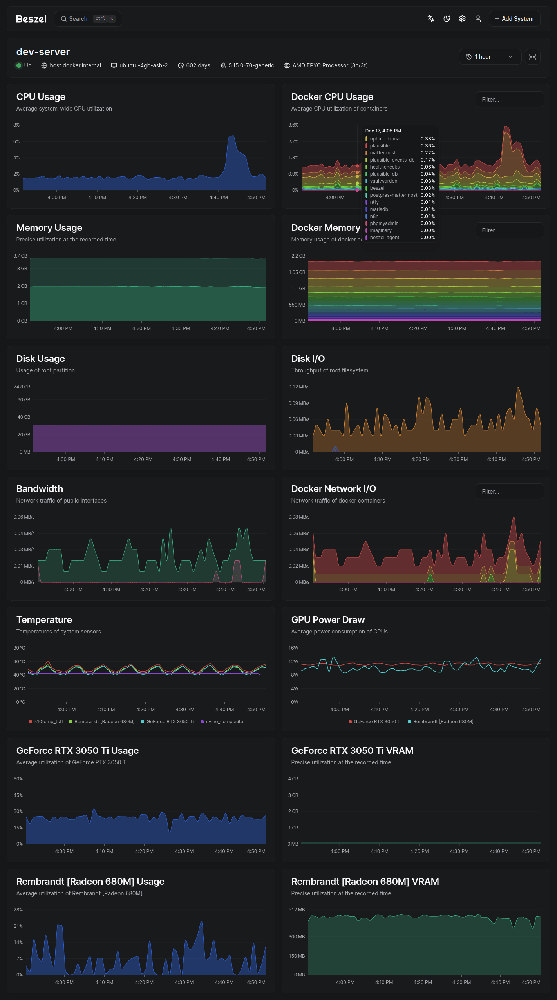
Per-system detail, including disk I/O and containers.Prometheus + Grafana — the standard metrics stack (self-host)¶
The de-facto homelab stack. Exporters expose /metrics; Prometheus scrapes and stores them as time-series + evaluates alert rules; Grafana queries Prometheus with PromQL and draws dashboards; Alertmanager routes/dedupes firing alerts to a receiver. Powerful and flexible — and the heaviest to learn and run.
flowchart LR
classDef src fill:#85c1e9,color:#1a252f,stroke:#2471a3
classDef tool fill:#52be80,color:#145a32,stroke:#196f3d
classDef leaf fill:#717d7e,color:#fff,stroke:#5d6d7e
E["exporters /metrics<br/>node_exporter · cAdvisor"]:::src -->|"scrape"| P["Prometheus<br/>TSDB + rules"]:::tool
P --> G["Grafana<br/>PromQL dashboards"]:::tool
P -->|"firing"| AM["Alertmanager"]:::tool --> N["notify (any receiver)"]:::leaf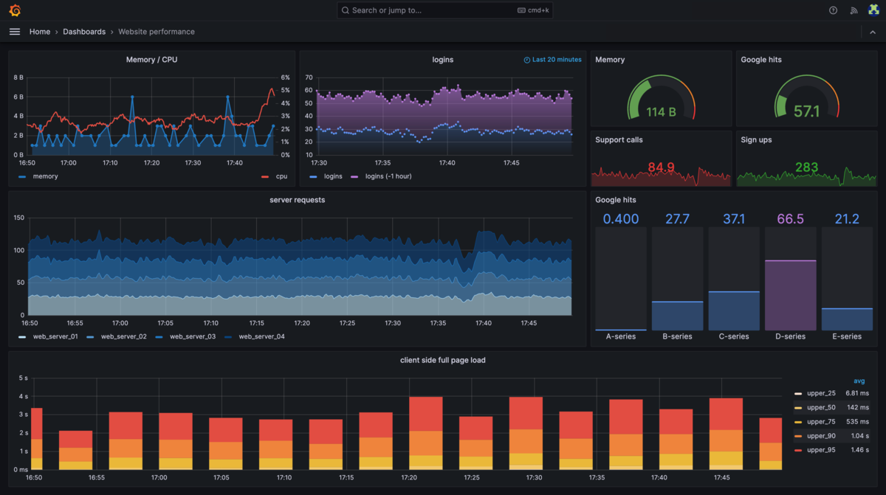
Grafana: dashboards built from PromQL queries against Prometheus.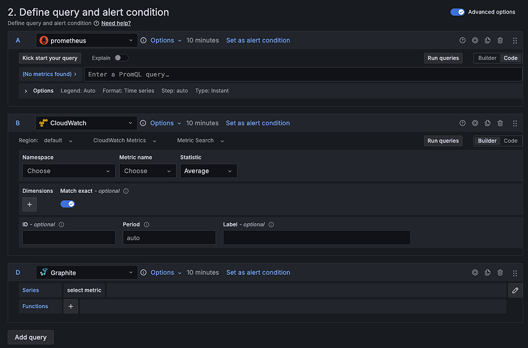
Grafana's alert-rule editor (the flexibility that's also the complexity).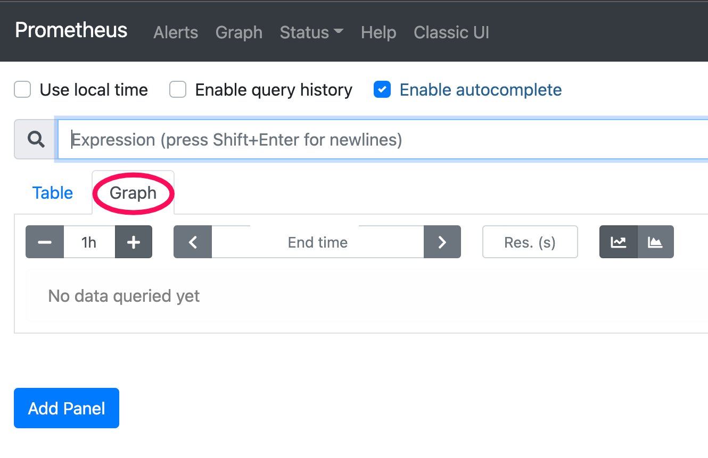
Prometheus' own expression browser — raw PromQL + graph.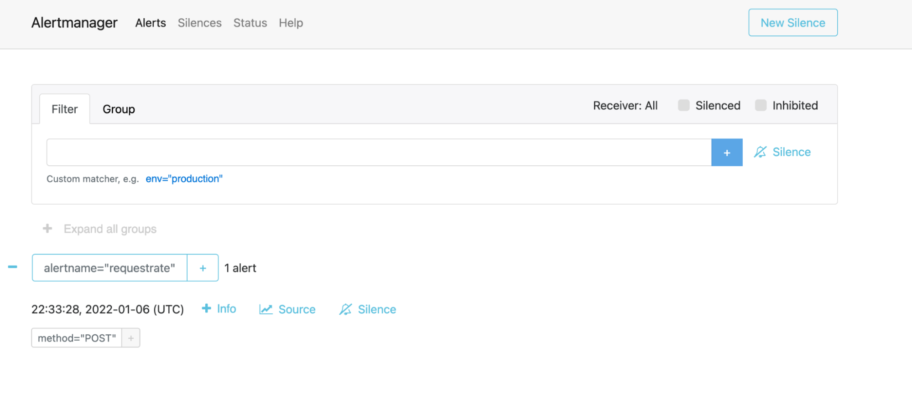
Alertmanager — where firing alerts are grouped, silenced and routed.Netdata — instant per-node deep metrics (self-host)¶
An agent per node auto-discovers thousands of metrics at 1-second granularity into a local TSDB, with a zero-config dashboard on :19999 and built-in health + ML-anomaly alerts. Gorgeous out of the box — but heavy on a constrained box (see Avoid).
flowchart LR
classDef src fill:#85c1e9,color:#1a252f,stroke:#2471a3
classDef tool fill:#52be80,color:#145a32,stroke:#196f3d
classDef leaf fill:#717d7e,color:#fff,stroke:#5d6d7e
AG["Netdata agent per node<br/>1s metrics → local TSDB"]:::src --> D["built-in dashboard :19999<br/>(or Netdata Cloud)"]:::tool
AG -->|"health + ML anomaly"| N["notify (any method)"]:::leaf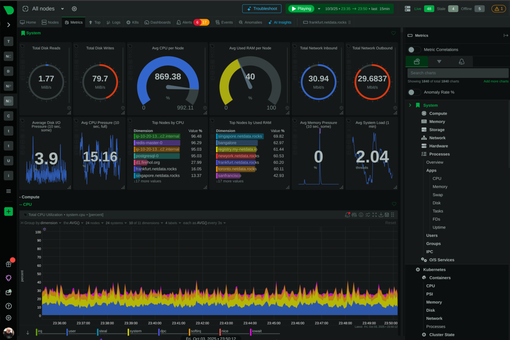
Per-second auto-generated charts — nothing to configure.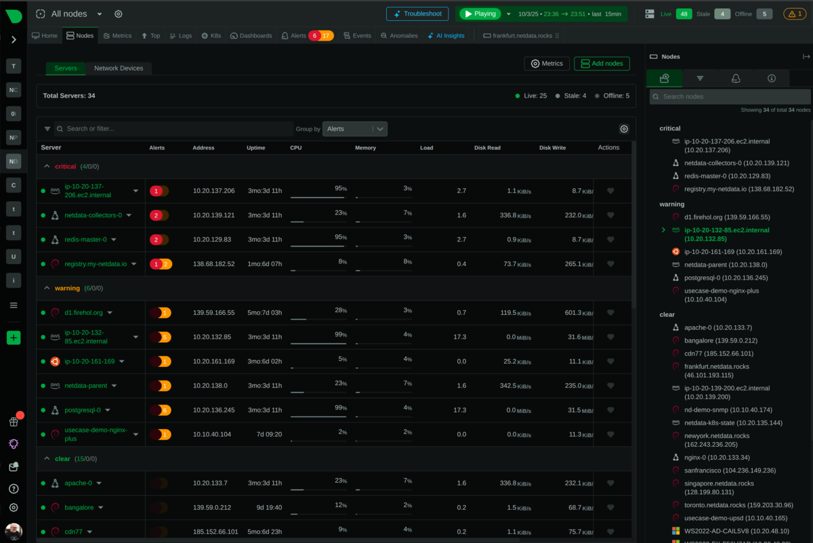
Nodes grouped by alert status (warning/critical).Axiom — logs + metrics + traces (SaaS)¶
A managed platform: apps / OpenTelemetry / Vector ship events in, Axiom stores them cheaply in object storage and runs query compute on demand. You explore with APL across logs/metrics/traces together; monitors evaluate on a schedule and notify. Lowest-maintenance (no infra), generous free tier.
flowchart LR
classDef src fill:#85c1e9,color:#1a252f,stroke:#2471a3
classDef tool fill:#52be80,color:#145a32,stroke:#196f3d
classDef leaf fill:#717d7e,color:#fff,stroke:#5d6d7e
I["apps · OTel · Vector"]:::src -->|"ingest"| AX["Axiom<br/>object storage"]:::tool
AX --> Q["APL queries · dashboards"]:::tool
AX -->|"monitor"| N["notify (webhook · Slack · …)"]:::leaf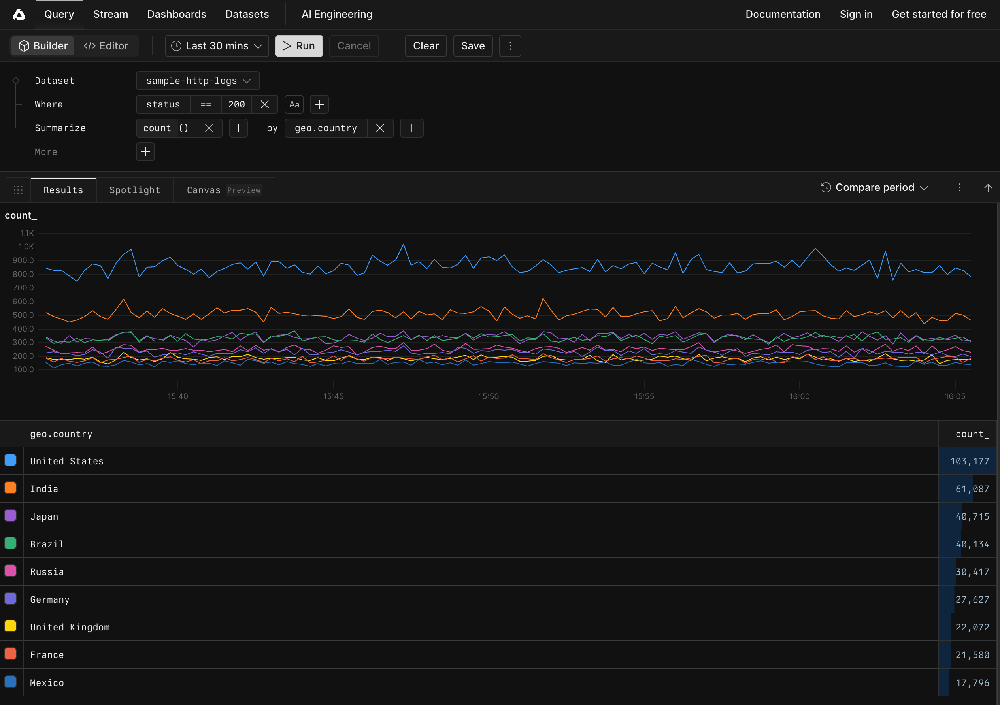
Querying logs in the Axiom console (APL).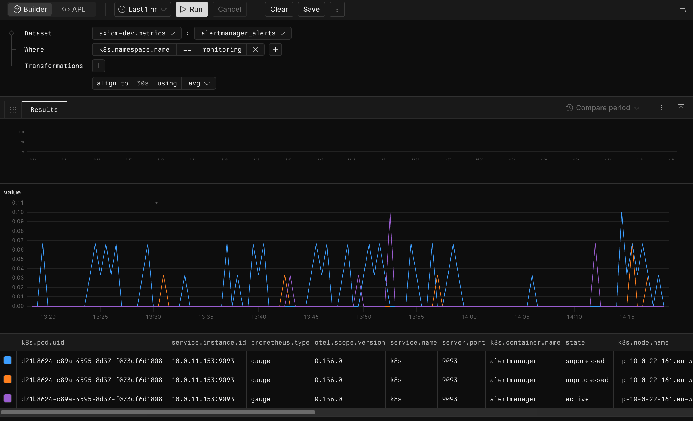
The same console over a metrics dataset.SigNoz — self-host all-in-one (the Datadog-shaped option)¶
OpenTelemetry-native: apps emit OTLP → an OTel Collector → SigNoz, which stores everything in ClickHouse and serves APM/traces/logs/dashboards/alerts in one UI. The self-hostable "single tool for all three signals" — at the cost of a ClickHouse-sized footprint.
flowchart LR
classDef src fill:#85c1e9,color:#1a252f,stroke:#2471a3
classDef tool fill:#52be80,color:#145a32,stroke:#196f3d
classDef leaf fill:#717d7e,color:#fff,stroke:#5d6d7e
AP["apps"]:::src -->|"OTLP"| OC["OTel Collector"]:::tool --> SG["SigNoz<br/>ClickHouse"]:::tool
SG --> U["UI: APM · traces · logs · dashboards"]:::tool
SG -->|"alert rule"| N["notify (any)"]:::leaf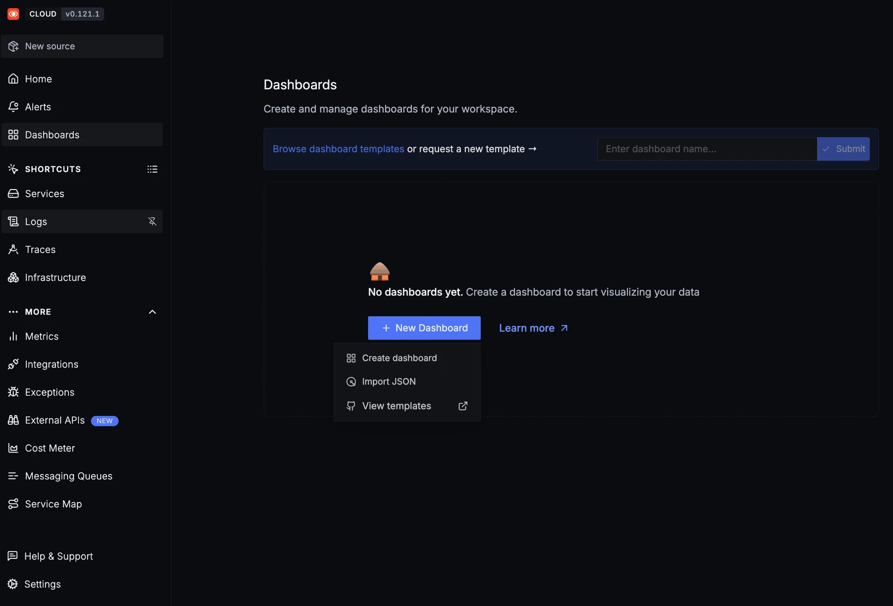
SigNoz dashboards — logs, metrics and traces in one place.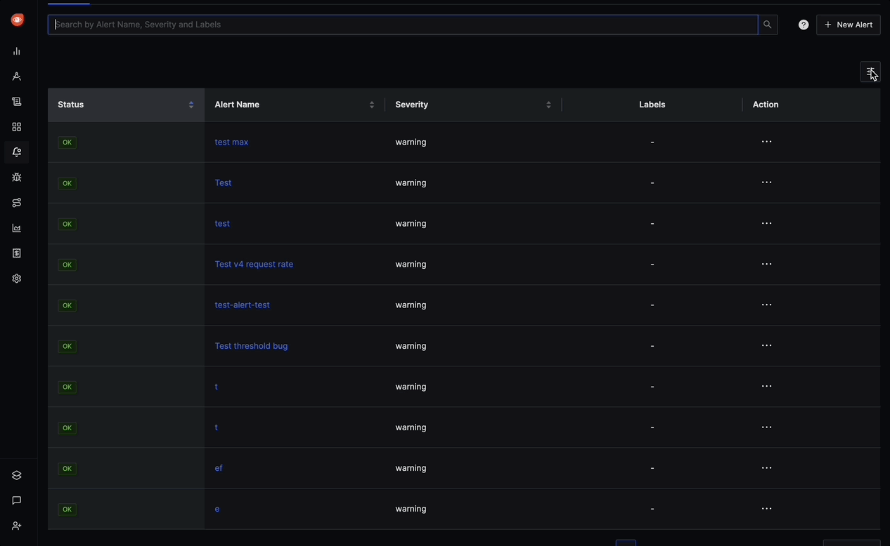
Defining alert rules in SigNoz.What the metrics look like (CPU over time)¶
Metrics are levels sampled over time — CPU%, RAM, disk IOPS, load. An agent reads the host, a TSDB stores the samples, a dashboard plots them, and a rule notifies you when a level crosses a threshold for long enough (so a blip doesn't page you, a sustained breach does):
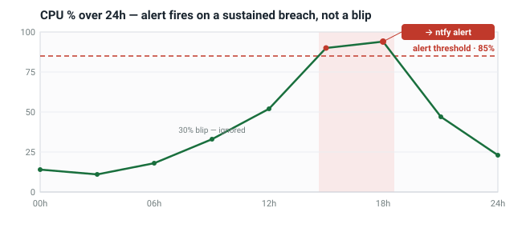
disk IOPS, RAM and load look the same — one series per metric, each with its own threshold. Beszel draws these out of the box; with node_exporter you get them via node_disk_*, node_memory_*, etc.
Dashboards — look vs be told (parallel to alerts)¶
Alerting is reactive — it tells you once something has already crossed a line. A dashboard is proactive — you go look and catch the disk slowly filling, memory creeping up, or IOPS climbing every night, and fix it before it ever trips a threshold. They're two parallel branches off the same store, and the important part: a dashboard is useful with zero alert rules set. You don't have to configure a single monitor to benefit from "let me just see CPU/RAM/IOPS over the last week".
flowchart LR
classDef tool fill:#52be80,color:#145a32,stroke:#196f3d
classDef key fill:#c39bd3,color:#4a235a,stroke:#7d3c98
classDef leaf fill:#717d7e,color:#fff,stroke:#5d6d7e
M["metrics store"]:::tool --> D["dashboard<br/>LOOK — spot trends early (proactive)"]:::tool
M --> R{"alert rule<br/>(optional, add later)"}:::key
R -->|breach| N["notify — BE TOLD (reactive)"]:::leafWhich tool gives you a "just go look" dashboard:
| Want | Use | What you get |
|---|---|---|
| Instant, zero-config, deepest | Netdata | every metric at 1-second resolution the moment it's installed (but heavy — see Avoid) |
| Lightweight, built-in | Beszel | CPU / RAM / disk-I/O / net + SMART per host, with history, in a small hub UI |
| Build / customise anything | Grafana (over Prometheus or VictoriaMetrics) | the most flexible dashboards — assemble panels from PromQL, or import community ones |
| Up/down + response time | Uptime Kuma | service status and latency graphs, not deep host resources |
| Logs + metrics + traces together | Axiom / SigNoz | query-driven views rather than always-on resource gauges |
Just want to eyeball this box right now, with nothing to run? btop / htop give a live terminal view (no history); glances adds a quick web/REST view. No storage, so no trends — but they answer "what's happening now" in one command.
So if your actual itch is "I want to glance at CPU/RAM/IOPS trends", that's a dashboard need, not an alerting need — reach for Beszel (light) or Netdata (deep, on a roomy box), or Grafana if you want to build your own. Alert rules can come later, or never; the dashboard stands on its own.
NixOS recipe (shape)¶
# Tier 0 — errors + daemon restart -> your notify channel (ntfy shown; swap freely)
systemd.services."notify@" = {
scriptArgs = "%i";
script = ''curl -fsS -d "$1 failed @ $(hostname)" https://ntfy.sh/your-topic''; # or Slack/Discord/email
};
systemd.services.myjob = {
serviceConfig = { WatchdogSec = "120"; Restart = "on-watchdog"; }; # daemon: restart on heartbeat loss
onFailure = [ "notify@%n.service" ]; # non-zero exit -> notify
};
# Tier 1 — dead-man's-switch: in the job append && curl -fsS https://hc-ping.com/<uuid>
# (self-host later: services.healthchecks.enable = true; or services.uptime-kuma.enable = true;)
# Tier 2 — lightweight metrics
services.beszel-agent.enable = true; # ~10 MB; hub elsewhere; alerts via Shoutrrr
# Tier 3 — ship logs/metrics, swappable backend
services.vector = {
enable = true; # config validated at build time
settings.sources.journal.type = "journald";
settings.sinks.axiom = { type = "axiom"; inputs = [ "journal" ]; /* dataset + token */ };
};
Avoid (for this scale + constraints)¶
- Netdata on a constrained box — its RAM growth is a known, open bug (#16412, recurred on v2.8.2 in Dec 2025); the UI is now proprietary and it was dropped from Debian. Beautiful, but it ate a mini-PC. Use Beszel instead unless you have a roomy box and want the per-second depth.
- Self-hosted Loki alerting — its Ruler leans on WAL replay (no rules evaluate during replay → alerts silently delayed/missed); the documented "fix" adds complexity. This is the "alerting is ungodly complex" trap.
- A 9-service Grafana/Prometheus stack for one cron job — the common over-build. Tier 0 + Tier 1 covers it.
TL;DR — what should I actually do?¶
Pick the lowest row that covers what you need; everything alerts to whatever channel you like.
| Approach | Effort + upkeep | Moving parts | Dashboard / QoL | Pros | Cons |
|---|---|---|---|---|---|
| systemd + Healthchecks (Tier 0+1) | tiny | ~1 (a hosted check, or one service) | none — alert-only | catches "didn't run / box down"; near-zero maintenance; native to NixOS | no trends, nothing to look at |
| Beszel | low | 2 (hub + agent) | good, lightweight built-in | ~10 MB agent; CPU/RAM/IOPS+SMART dashboard and alerts in one; won't eat the box | younger project; fixed metric set; no PromQL |
| Netdata | low | 1 per node | best instant dashboard (1 s, zero-config) | gorgeous and deep the moment it's installed | RAM growth on small boxes (Avoid); UI now proprietary |
| Uptime Kuma | low | 1 | status + response graphs | dead-simple, pretty status pages, push monitors for cron | up/down only — not deep host resources |
| Prometheus + Grafana + Alertmanager | high | 4+ (exporters · Prometheus · Grafana · Alertmanager) | best + most flexible | the standard; powerful PromQL; huge dashboard + exporter ecosystem | steepest curve; most parts to run and break |
| Vector → Axiom (SaaS) | low | 1 agent + a SaaS account | good — logs+metrics+traces UI | no infra to run; the UX you already like; 500 GB/mo free | data leaves the box; vendor dependency |
| SigNoz / OpenObserve (self-host all-in-one) | medium–high | OpenObserve ≈ 1 binary · SigNoz = a ClickHouse stack | good — all signals in one UI | own your data; logs+metrics+traces together | SigNoz heavy (ClickHouse); OpenObserve younger |
The honest default for you: ship Tier 0 + Tier 1 (systemd + Healthchecks) on every box first — an afternoon, and it catches the failures that matter. Add Beszel the moment you want to look at CPU/RAM/IOPS trends (lightweight, dashboard + alerts in one). Reach for Prometheus + Grafana only once you've outgrown that and genuinely want PromQL and the ecosystem — not before.
Further reading¶
Real writeups this page is grounded in (fetched 2026-06-18):
Screenshot sources: Uptime Kuma & Healthchecks GitHub READMEs; beszel.dev; netdata.cloud; grafana.com; the Grafana Labs intro-to-prometheus repo (Prometheus/Alertmanager UI); axiom.co/docs; signoz.io/docs. Tool-specific footprint/licensing claims (Netdata, VictoriaMetrics, Axiom limits) are detailed with sources in scratchpads/research-observability-stack.md.
-
Natsuki — End-to-End Monitoring Explained for Homelabs: Prometheus, Grafana & Alertmanager (2026-01-09) — https://blog.natsuki-cloud.dev/posts/homelab-monitoring-prometheus-grafana/ ↩
-
Dyllan — Deploy a Complete Homelab Monitoring Stack with Docker Compose (2026-02-21) — https://www.nxsi.io/blog/homelab-monitoring-stack-tutorial ↩
-
Ayush Pande (XDA) — This free, open-source lightweight server monitor changed how I keep an eye on my homelab (Beszel) (2025-05-20) — https://www.xda-developers.com/beszel-feature/ ↩
-
Bassim Lazem (BigData Republic) — Effective Cron Job Monitoring (2023-06-14) — https://bigdatarepublic.nl/articles/effective-cron-job-monitoring/ ↩
-
Daniel Pecos Martínez — Homelab monitoring using Grafana and Prometheus (2024-08-29) — https://danielpecos.com/2024/08/29/homelab-monitoring-using-grafana-and-prometheus/ ↩